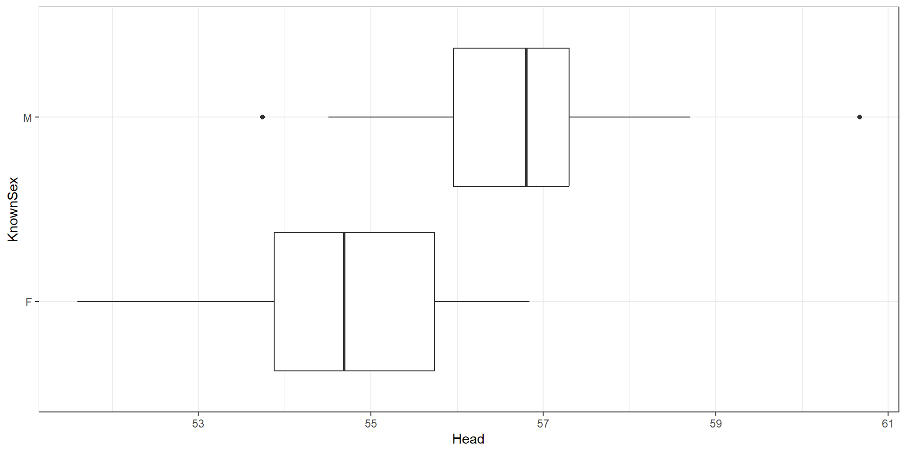
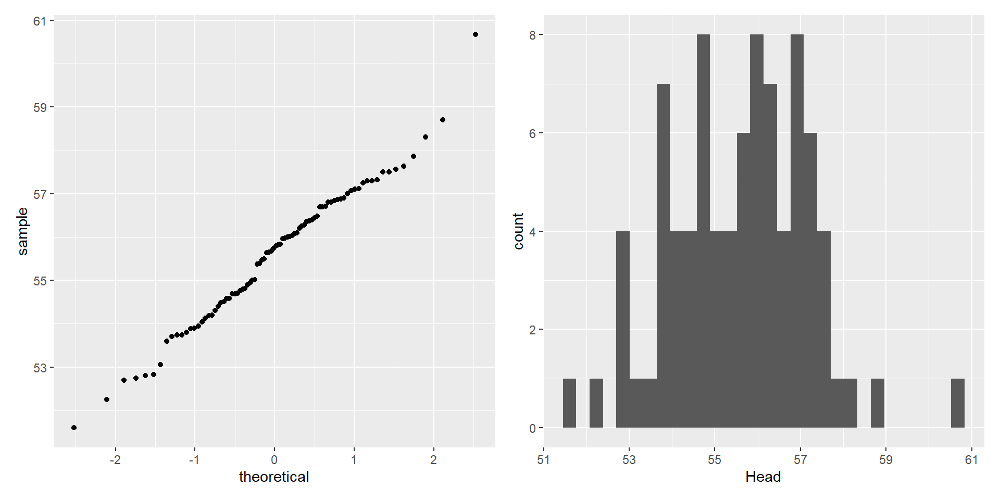

Chapter 4 Part 2
Multinomial Logisitc, LDA, QDA
Cornell College
STA 362 Spring 2024 Block 8
Recap
- We had a logistic regression refresher
Now…
- What if our response has more than two levels?
- What if logistic regression is a poor fit?
Setup
Multinomial Logistic
So far we have discussed logistic regression with two classes.
It is easily generalized to more than two classes.
Confounding
Recall our defaults data with variable default, student, and balance

What is going on here?
Confounding
- Students tend to have higher balances than non-students
- Their marginal default rate is higher
- For each level of balance, students default less
- Their conditional default rate is lower
Multiple logistic regression
\[\log\left(\frac{p(X)}{1-p(X)}\right)=\beta_0+\beta_1X_1+\dots+\beta_pX_p\] \[p(X) = \frac{e^{\beta_0+\beta_1X_1+\dots+\beta_pX_p}}{1+e^{\beta_0+\beta_1X_1+\dots+\beta_pX_p}}\]
| term | estimate | std.error | statistic | p.value |
|---|---|---|---|---|
| (Intercept) | -10.8690452 | 0.4922555 | -22.080088 | 0.0000000 |
| balance | 0.0057365 | 0.0002319 | 24.737563 | 0.0000000 |
| income | 0.0000030 | 0.0000082 | 0.369815 | 0.7115203 |
| studentYes | -0.6467758 | 0.2362525 | -2.737646 | 0.0061881 |
- Why is the coefficient for
studentnegative now when it was positive before?
Logistic regression for more than two classes
\[P(Y=k|X) = \frac{e ^{\beta_{0k}+\beta_{1k}X_1+\dots+\beta_{pk}X_p}}{\sum_{l=1}^Ke^{\beta_{0l}+\beta_{1l}X_1+\dots+\beta_{pl}X_p}}\]
- We generalize this to situations with multiple classes
- Here we have a linear function for each of the \(K\) classes
- This is known as multinomial logistic regression
Linear Discriminant Analysis (LDA)
LDA Warmup
To give us a general overview, we are going to watch the StatQuest video on the topic: https://www.youtube.com/watch?v=azXCzI57Yfc
Discriminant Analysis
Here the approach is to model the distribution of X in each of the classes separately, and then use Bayes theorem to flip things around and obtain \(P(Y|X)\).
When we use normal (Gaussian) distributions for each class, this leads to linear or quadratic discriminant analysis.
However, this approach is quite general, and other distributions can be used as well. We will focus on normal distributions.
Why Another Approach?
When the classes are well-separated, the parameter estimates for the logistic regression model are surprisingly unstable. Linear discriminant analysis does not suffer from this problem.
If n is small and the distribution of the predictors X is approximately normal in each of the classes, the linear discriminant model is again more stable than the logistic regression model.
Linear discriminant analysis is popular when we have more than two response classes, because it also provides low-dimensional views of the data.
Bayes Theorem (classification)
Thomas Bayes was a famous mathematician whose name represents a big subfield of statistical and probabilistic modeling. Here we focus on a simple result, known as Bayes theorem:
\[P(Y=k|X=x) = \frac{P(X=x|Y=k)\cdot P(Y=k)}{P(X=x)}\]
Bayes for Discriminant Analysis
\[P(Y=k|X=x) = \frac{\pi_kf_k(x)}{\sum_{l=1}^K\pi_lf_l(x)} \text{, where}\]
\(f_k(x)=P(X=x|Y=k)\) is the density for \(X\) in class \(k\). Here we use normal’s but they could be other distributions (such as \(\chi^2\))
\(\pi_k = P(Y=k)\) is the marginal or prior probability for class \(k\).
Classify to the highest density
\[\pi_1=.5, \pi_2=.5\]
We classify a new point according to which density is highest.
When the priors are different, we take them into account as well, and compare \(\pi_kf_k(x)\).
On the right, we favor the pink class - the decision boundary has shifted to the left.
LDA (when \(p=1\))
The Gaussian (normal) density has the form
\[f_k(x) = \frac{1}{\sqrt{2\pi}\sigma_k}e^{-\frac{1}{2}(\frac{x-\mu_k}{\sigma_k})^2}\]
\(\mu_k\) is the mean, \(\sigma_k^2\) the variance (in class \(k\))
For now, we assume \(\sigma_k=\sigma\) for all groups (we will need to check this with real data)
LDA (when \(p=1\))
We plug this \(f_k(x)\) into Bayes formula and after some simplifying we get:
\[p_k(x) = \frac{\pi_k\frac{1}{\sqrt{2\pi}\sigma}e^{-\frac{1}{2}(\frac{x-\mu_k}{\sigma_k})^2}}{\sum_{l=1}^K\pi_l\frac{1}{\sqrt{2\pi}\sigma}e^{-\frac{1}{2}(\frac{x-\mu_k}{\sigma_k})^2}}\]
Discriminant Function
To classify at the value X = x, we need to see which of the \(p_k(x)\) is largest. Taking logs, and discarding terms that do not depend on \(k\), we see that this is equivalent to assigning x to the class with the largest discriminant score:
\[\delta_k(x) = x\cdot \frac{\mu_k}{\sigma^2}-\frac{\mu_k^2}{2\sigma^2}+log(\pi_k)\]
Importantly, \(\delta_k(x)\) is a linear function of \(x\).
If there are \(K=2\) classes and \(\pi_1=\pi_2=.5\), then the decision boundry is at
\[x=\frac{\mu_1+\mu_2}{2}\]
Maximizing \(\delta_k(x)\)
- In order to maximize this, we need estimates for all the parameters
What should we estimate \(\hat{\pi_k}\), \(\mu_k\), and \(\sigma^2\) with?
Maximizing \(\delta_k(x)\)
\[\hat{\pi}_k = \frac{n_k}{n}\]
\[\hat{\mu}_k = \frac{1}{n_k}\sum_{i:y_k=k}x_i\]
\[\hat{\sigma}^2 = \frac{1}{n-K}\sum_{k=1}^K\sum_{i:y_i=k}(x_i-\hat{\mu}_k)^2 = \sum_{k=1}^K\frac{n_k-1}{n-K}\cdot \hat{\sigma}_k^2\]
Where \[\hat{\sigma}_k^2 = \frac{1}{n_k-1}\sum_{i:y_i=k}(x_i-\hat{\mu}_k)^2\]
LDA In R Example (\(p=1\))
Can we determine the sex of a blue jay by measuring the distance from the tip of the bill to the back of the head (Head)?
LDA Bluejays EDA
LDA Bluejays EDA
What assumptions should we check?
Normality of our predictor
Constant variance between groups.
LDA Bluejays EDA - Normality
LDA Bluejays EDA - Variance
# A tibble: 2 × 2
KnownSex Head_sd
<fct> <dbl>
1 F 1.31
2 M 1.20- Very similar standard deviations (and thus variances)
Fit LDA
Check The Fit
Compare to Logistic
Application Exercise
We are going to use the penguins data from the palmerpeguins package.
Conduct basic EDA to see if penguin bill length is different by sex and if LDA is an appropriate model choice.
Use LDA to predict penguin sex based on their bill length using training and testing data. Get the accuracy on the testing set.
Fit a logistic regression model and get it’s accuracy to see which did better.
LDA with \(p>1\)
When we have 2 or more predictors, the distribution becomes multivariate.
If the covariance between predictors is 0 within each class of the response, LDA is still appropriate.
For example, with 2 normal predictors, their distributions in 3d would like like this:

Luckly, the descrimintae function remains
linear

\[\delta_k(x) = c_{k0} + c_{k1}x_1+...c_{kp}x_p\]
Example: \(p=2,K=3\)
There is no limit on the number of levels of the categorical response for LDA
Suppose \(\pi_1=\pi_2\pi_3=1/3\)
- The dashed lines are known as the Bayes decision boundaries
Probabilities
Once the estimates for the \(\hat{\delta}_k(x)\) have been found, we can plug them in and get:
\[\hat{P}(Y=k|X=x)=\frac{e^{\hat{\delta}_k(x)}}{\sum_{l=1}^Ke^{\hat{\delta}^l(x)}}\]
Classifying to the largest \(\hat{\delta}_k(x)\) amounts to classifying to the class for which \(\hat{P}(Y = k|X = x)\) is largest.
When \(K = 2\), we classify to class 2 if \(\hat{P}(Y = 2|X = x)\geq 0.5\), else to class 1.
Example - Credit Card Fraud
Truth
Prediction No Yes
No 2889 83
Yes 2 26# A tibble: 1 × 3
.metric .estimator .estimate
<chr> <chr> <dbl>
1 accuracy binary 0.972Accuracy of 97.7% on a testing set!
What about the different types of errors?
Errors
Of the true
yes, we made errors at the rate of 83/(83+26), 76%Of the true
no, we made errors at the rate of 2/(2889+2), .069%
Types of Errors
Recall:
False positive rate: The fraction of negative examples that are classified as positive.
False negative rate: The fraction of positive examples that are classified as negative.
Remember the model gave probabilities, the final
yesor no is decided by\[\hat{P}(Default=Yes|Balance,Student) \geq .5\]
- We can adjust our error rates by changing that threshold
Sensitivity and Specificity
Truth
Prediction No Yes
No 2889 83
Yes 2 26- The sensitivity is the true positive rate.
- The rate at which we correctly predict a person will default.
- 26/(83+26) = .24 (24%)
- The specificity is the true negative rate.
- The rate at which we correctly predict a person will not default.
- 2889/(2889+2) =.999 (99.9%)
Varying the threshold
In order to determine the best threshold, we want to maximize the specificty and sensitivity.
OR - maximize the sensitivty and minimize 1-specificity.
In order to to do this we use an \(ROC\) curve which stands for receiver operating characteristic curve.
ROC Curve
We want to maximize the area under this curve, called ROC AUC
ROC Curve
ROC AUC
# A tibble: 1 × 3
.metric .estimator .estimate
<chr> <chr> <dbl>
1 roc_auc binary 0.957If we want to tune our model better, we can optimize the ROC AUC by changing the threshold.
I did a train/test approach here. What should I do different if I want to tune for threshold?
Quadratic Discriminant Analysis (QDA)
QDA
QDA arises when \(p>1\) and the is a covariance structure between the predictors within the same level of the response.
This introduces a squared term into the maximization problem of the \(\delta_k(x)\), thus the name.
QDA In R
qda_fit<-discrim_quad() |>
set_mode("classification")|>
set_engine("MASS")|>
fit(default ~ balance + student,
data = training(def_splits))
qda_fit |>
augment(new_data = testing(def_splits)) %>%
conf_mat(truth = default, estimate = .pred_class) Truth
Prediction No Yes
No 2888 80
Yes 3 29# A tibble: 1 × 3
.metric .estimator .estimate
<chr> <chr> <dbl>
1 roc_auc binary 0.957